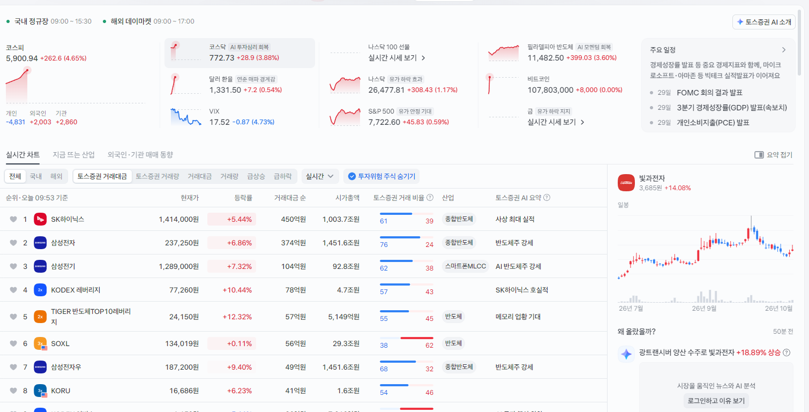

폭등중.
AI 기업으로 상장하는 앤트로픽도 예상보다 재무구조가 훨씬 좋고 그게 AI 투자에 대한 우려를 완화시킴

폭등중.
AI 기업으로 상장하는 앤트로픽도 예상보다 재무구조가 훨씬 좋고 그게 AI 투자에 대한 우려를 완화시킴
원금만 돌려주시오 다시는 오지 않겠소
고니:난 원금에 반만가져가
의
시장에 피가 낭자하고..
"그가 기대합니다." ㅡ 초반에 살짝 올려주고...
나라 전체가 개잡주 무빙치네 ㅅㅂ
갈 길이 멀다
이제 다음 메타 실발때 AI 기업 돈없다! 버블 터지기 직전이다! 하고 상승분 다 반납 할까봐 두렵다
병신들 배우는게 없네
이번하락은 7월저점 5200도 못깼는데 못배운건 누구인가 ㅋㅋ
대충 무슨먼스키 차트 '새로운 논리 개발'
데드캣바운스
시발 하루 반등쳤는데 이게 반등인지 아닌지 어떻게 알아. 그런데 나는 찐반등이었으면 좋겠다 씨발거 ㅠㅠㅠㅠㅠㅠㅠㅠㅠㅠㅠㅠㅠ
현금을 항상 10~30% 냄겨두면 됨
6000넘으면 조금이라도 관성 받아서 더 가는거고
5200밑으로 가면 진짜로 4짜 보는거고...확률로 생각해
원래는 현금 남아 있었어...
개미들은 그런거 모른다 그래서 걍 적립식 장기투자가 답이라는거다
모두가 망했다고 생각할때 사야됨 근데.. 손이 잘안가.. ㅋㅋ
저건 모두가 고점이라고 생각한 가격이니까
1년전, 2년전 가격을 봐라
폭락 뒤 폭등이면 좋은게 아니야 이 사람들아...
주린이들 주식이 떨어진다고 매일 떨어지기만 하는줄 아나? 3% 떨어졌다 다음날 2% 올랐다 다음날 1프로 떨어졌다 다음날 2프로 올랐다 이런식으로 올라갔다 내려갔다 하면서 서서히 올라가거나 내려가는거지
나라 망해야만 기쁜 새끼들이 많다
시발 평탄 와서 절반 털었다
씨발 내가 하이닉스 최근 최저점에서 반 팔았더니 이지랄하네 개씨발ㅋㅋㅋ